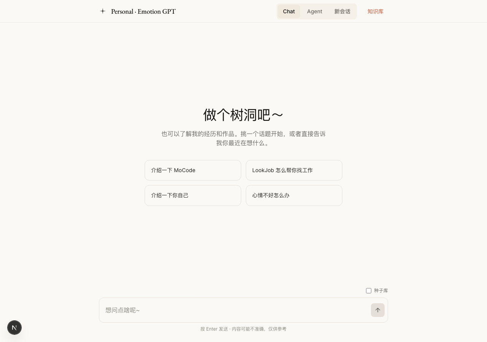
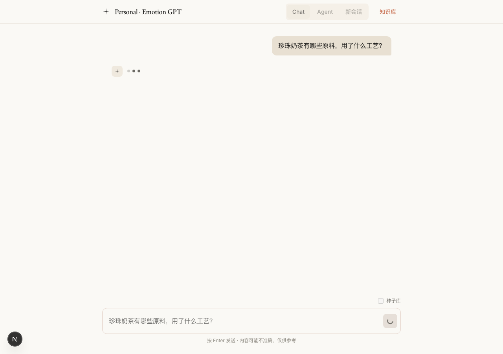
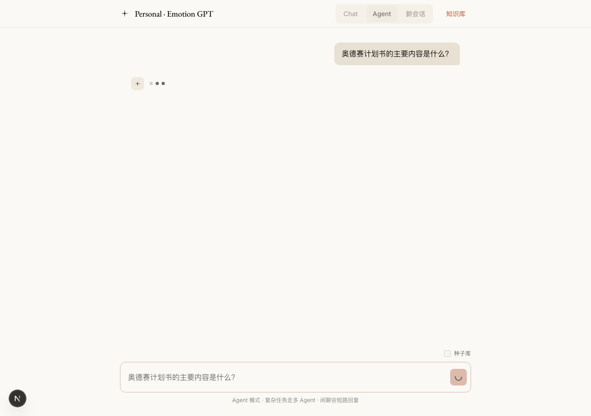
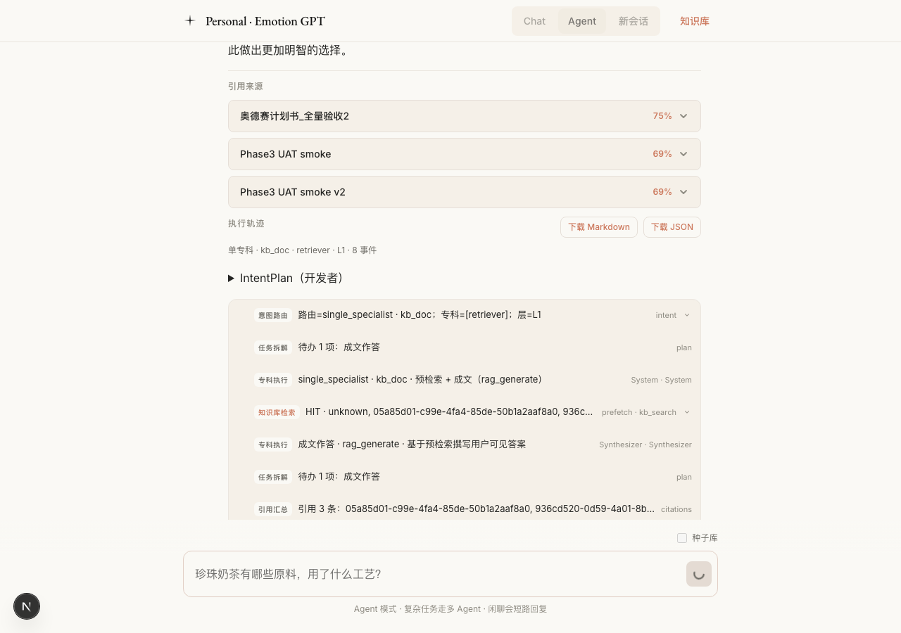
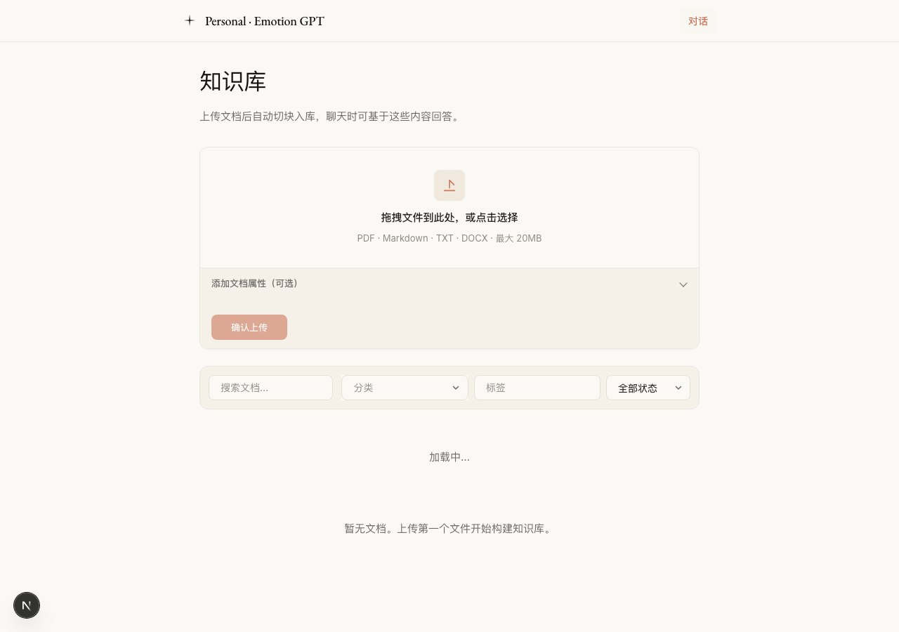

API 功能验收
| # | 步骤 | 结果 | 说明 | 截图/产物 |
|---|---|---|---|---|
| 1 | Web 首页可访问 | PASS | http://localhost:3000 | — |
| 2 | Agent /health | PASS | http://127.0.0.1:3002/health | — |
| 3 | GET /api/kb/documents | PASS | status=200 · count=4 · 奥德赛计划书_全量验收2, Phase3 UAT smoke v2, Phase3 UAT smoke, 韶音手册2024 | — |
| 4 | Agent API · graph_relation | PASS | primary=graph_relation · route=single_specialist · len=474 | A-agent-stream.txt |
| 5 | Agent API · kb_doc synthesis | PASS | citations=3 · title=奥德赛计划书_全量验收2 | B-kb-agent-stream.txt |
| 6 | Chat API · data-graph-paths | PASS | paths=1 | C-chat-stream.txt |
UI 浏览器验收（Playwright）
| # | 步骤 | 结果 | 说明 | 截图/产物 |
|---|---|---|---|---|
| 1 | 打开首页 | PASS | http://localhost:3000 |
 |
| 2 | Chat UI · 图谱路径卡片 | PASS | Personal · Emotion GPT Chat Agent 新会话 知识库 珍珠奶茶有哪些原料，用了什么工艺？ 服务暂时不可用，请稍后重试 (requestId: f9a5bbdf-66e4-4557-a007-ddd7368d · API paths=1；UI 卡片因 LLM Groq 403 未渲染（SSE 已含 data-graph-paths） |
 |
| 3 | Agent UI · kb_doc + 引用 | PASS | Personal · Emotion GPT Chat Agent 新会话 知识库 奥德赛计划书的主要内容是什么？ 助手 · AGENT 待办 成文作答 执行步骤 SYSTEM 知识库检索 完成 single_speciali |
 |
| 4 | Agent UI · graph_relation 成文 | PASS | Personal · Emotion GPT Chat Agent 新会话 知识库 珍珠奶茶有哪些原料，用了什么工艺？ 助手 · AGENT 待办 成文作答 执行步骤 SYSTEM 图谱检索 完成 single_special |
 |
| 5 | 知识库页面 · 列表加载 | PASS | title=Personal-Emotion-GPT · rows≈4 |
 |
{kind=link}
{kind=link}
{kind=link}
{kind=link}
{kind=link}